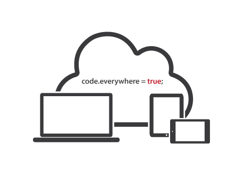
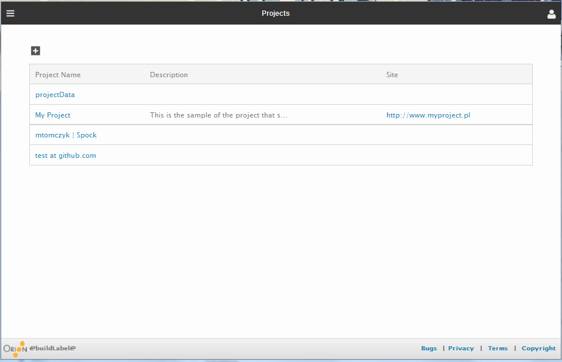
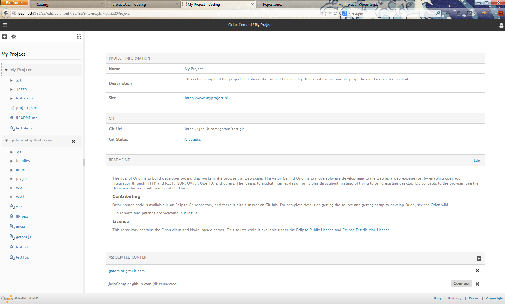

Eclipse Members Meeting
Orion Project Update
Sept 17, 2013

kenwalker.github.io / @kwalker / @orionhub
ken_walker@ca.ibm.com - Orion Project Lead
One-Click Clone and Edit this Presentation at OrionHub
Project Activity
- Almost 1 year since graduating to 1.0
- Orion delivers 3 'dot' releases per-year
- 2.0 Feb, 3.0 June, 4.0 October
- 27 committers, around 17 active
- ~52 contributors
- Very active commits (Ohloh Statistics)
Examples of Enhancements thru 3.0
- Continual work on Editor
- separate stand alone builds
Yes, this is the Orion editor in a presentation...
Examples of Enhancements thru 3.0...
- Node.js implementation
npm install orionnpm start orion- New WAR file install for Java Server
- Maven/Tycho build (still in progress)
Work ongoing in 4.0
- Server Scalability
- Search indexing improvements
- Meta-Data and Workspace info rewrite
- Index file content assist support for JavaScript libraries (targetting Node development)
- Git improvements including Git Blame in the Editor
- Major improvements to Orion plugin architecture to allow 2-way communications
- Initial work on an Orion Marketplace, or Plugin repository
- Initial release of Projects capability...
Projects List
{kind=link}
An Individual Project
{kind=link}
Orion Challenges
- Consuming 3rd party JavaScript Libraries
- This is the only way that Orion can remain current with the rapid development cycles in the JavaScript world
- If we lag, those looking to choose a platform or component will look elsewhere
- Current process as we understand assumes
- A 'version' of the library (not often available)
- A compatible license (getting better)
- a contributor agreement (Not so much)
- While GitHub has initiated a license Chooser, the concept of contributor agreements is not standard
- Is there a minimum template we can encourage library/tool developers to utilize which will be compatible with the Eclipse Legal Review process? Do we initiate change in the review process?
Eclipse Members Meeting - Orion Update
Any further questions, please contact:
ken_walker@ca.ibm.com | @kwalker

One-Click Clone and Edit this Presentation at OrionHub
Backup
Find out more
Read our blog at Planet Orion
Check out the Orion BUZZ
Lots of information in the Orion Wiki
Subscribe and contribute to the Orion Dev List
Create an account and try it at OrionHub
Available components and shims from Orion
Promises/A+ cancellation and progress, W3C URL, W3C Web Components, HTML Templates and Custom Elements, JavaScript APIs for OSGi
Orion Deferred, Orion HTML Templates Shim, Orion URI Templates, Orion URL Shim, Orion Plugin Registry, Orion Service Registry, Orion XHR Implementation, Orion Node Deferred File System Stand-alone Editor (follow stable links)
All under the EPL and EDL